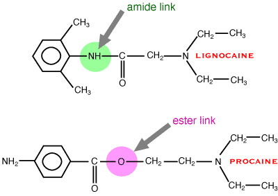

Many drugs have some local anaesthetic effect but the useful drugs all have an aromatic (lipophilic) end joined to a basic amine (hydrophilic) end by either an ester or, more commonly, an amide group. These different links are important in metabolism as this is where the molecule is split to inactivate it.

Blockade of voltage gated sodium channels in nerve axons. The sodium channels can exist in three states: closed (normal), open (only for milliseconds) and inactivated (after opening). The local anaesthetic binds to the channels in the open or inactivated states. More channels will be in these states if the nerve is actively firing, so local anaesthetics work better in active neurones (use dependance).
A variety of subtypes of sodium channels have been discovered.
Some drugs are marginally selective for some subtypes. In future, drugs which
just block the selected type of nerve may be clinically available. Current local
anaesthetics are not selective and will block voltage gated calcium channels
too - these may be important in C fibres.
| tissue | sodium channels |
| CNS | Nav 1.1, 1.2, 1.3 |
| dorsal root ganglia | Nav 1.8, 1.9 |
| peripheral neurones | Nav 1.7 |
| neurones and glia | Nav 1.6 |
| skeletal muscle | Nav 1.4 |
| heart | Nav1.5 |
A sodium channel cycling through its three states.
The effect of local anaesthetic.
Local anaesthetics are unusual in that they are normally applied directly to the site of action. However, most of them still have to get into nerve cells to work. pKa is important for penetration into neurones, most local anaesthetics have a pKa of 8 - 9. Most local anaesthetics cross the neurone cell membrane (in the unionised form) and get to their binding site from the inside. Some unionised drug may go directly from the outside through the cell membrane to the binding site.
The action of local anaesthetics is terminated by redistribution. They are rapidly distributed away from the site of action unless vasoconstrictors are given at the same time (adrenaline, felypressin). These are contra - indicated where the blood supply to an organ may be compromised by vasoconstriction, eg a cow’s teat or a dog’s toe. Adrenaline is much less stable than most local anaesthetics and has a short shelf life.
Esters are rapidly broken down by plasma cholinesterase, amides are broken down more slowly in liver. Lignocaine (an amide) is amost completely metabolised in one pass through the liver - it cannot be given orally. Most commonly used drugs are metabolised to 2,6 xylidine and other compounds.
Since local anaesthetics get into the sodium channel more easily when it is open and bind to the channel more tightly in the inactivated state, if the channels are cycling through the three states (ie action potentials are passing along the nerve) the local anaesthetics will work better. Thus rapidly firing nerve fibres will be preferentially blocked. Nerve fibres carrying pain signals tend to be firing more rapidly than others, but use dependence is mainly important in the anti-arrhythmic and anticonvulsant effects of local anaesthetics. In these situations it is sometimes possible to block rapidly firing cells while having no effect on cells firing more slowly.
The onset of blockade follows a regular pattern: small myelinated fibres (Aδ) are blocked first, followed by small unmyelinated fibres (C) and then large myelinated fibres (Aα). This means that pain and sympathetic transmission is blocked before motor transmission. This is obviously desirable but is difficult to achieve reliably in clinical situations. However, at a steady state, a 2 - 4 times higher concentration is required to block C fibres compared to Aα fibres. The discrepancy may be because C fibres have different subtypes of Nav channels and also possess Cav channels.
Usually occurs after accidental iv injection, but some types of block require large doses - it is particularly easy to overdose sheep. The toxic dose of lignocaine in most species is about 7mg/kg.
sedation
convulsions
cardiotoxicityautomaticity depressed
myocardial toxicity (especially bupivacaine)
operative analgesia (usually need sedation except in ruminants)
postoperative analgesia
diagnosing lameness (usually horses)
(arrhythmias - not with adrenaline!)
(convulsions)
•topical (eg., eye, larynx) (skin - Eutectic Mixture of Local Anaesthetics, EMLA) - blocks local nerve endings. Remember that most drugs are weak bases so they are dissolved in acid - ie, they sting when put into eyes!!!
•local infiltration (eg., L block for caesarian section) - blocks nerve endings in area to be desensitised. Use a fine needle!
•nerve block (eg., paravertebral for caesarian section) - blocks transmission in a specific nerve (and thus the area it supplies). Needs some knowledge of anatomy!
•epidural and
•intra-thecal - block the area supplied by the nerves arising from the affected part of the spinal cord. Needs more kowledge of anatomy or spinal cord can be damages. Also blocks motor nerves.
•Bier's block (Intra Venous Regional Anaesthesia, IVRA) (eg., for foot operations) - injection into a vein below a tourniquet - blockade of most of the tissues below the tourniquet. nb. analgesia stops when the tourniquet is removed
•intra-articular - mainly the synovial membrane. Be extemely careful not to introduce bacteria into joints.
Since iv administration causes side effects, care should be taken that the drug is not injected into a vein; ie aspirate before injecting.
By far the most commonly used drug is lignocaine (lidocaine USAN). It is chemically stable (can be autoclaved), spreads through tissues, used as 1 or 2% solution parenterally, 4% topically. It has a rapid onset - less than 5 min, medium duration of action - 30 - 40 minutes (1 hour with adrenaline). Depending on the type of block being used, it is possible to give toxic amounts (maxiumum dose 7mg/kg). It is cheap.
Prilocaine is very similar to lignocaine but less toxic - used for Bier's blocks (IVRA). Mepivacaine again is very similar to lignocaine but less irritant - used in horses for diagnostic nerve block (some horses produce a local inflammatory reaction to lignocaine). Bupivacaine is more potent, has a slower onset - 20 minutes but longer action - up to 8 hours. This is useful for post op analgesia. Adrenaline is not usually used with this drug. One of its stereoisomers is potentially cardiotoxic - maximum dose 2mg/kg. Ropivacaine is similar to bupivacaine but is much less toxic (and even more expensive).
Amethocaine (tetracaine USAN) is the only ester
used clinically. It is usually given topically in the eye. Proxymethacaine is similar. Cinchocaine is sometimes used for spinal blocks
but is pretty toxic (it has been used in combination with phenobarbitone for
euthanasia). Benzocaine is an insoluble local anaesthetic sometimes
found in powders applied topically to stop animals itching.
Procaine is obselete - slow onset, poor penetration of mucous
membranes, toxic - do not use. The similar chloroprocaine may
be better but is not available in NZ.
Tetrodotoxin (TTX) from puffer fish, blue ringed octopus, etc (produced by symbiotic Vibrio spp) and saxitoxin (STX) from toxic algae are large organic molecules which bind very specifically to (some) sodium channels from the outside and are used to study sodium channels in the laboratory. They are widely used in vitro to block action potentials and are very toxic. They are not used therapeutically, but experimental use shows that they can produce up to 20 hours block in people. They may rarely be seen as poisoning cases (usually saxitoxin - there are probably no blue ringed octopus in NZ).
A variety of obscure spider and scorpion toxins also affect sodium channel gating in such a way as to mimic block clinically - hopefully you will not come across these except in scientific papers.
Veratridine is used experimentally; a variety of insecticides such as DDT and pyrethrums have similar effects. Although not used for their effects in mammals, these are occasionally seen as poisoning cases eg, sea anenome poisoning.
One of the metabolites of most local anaesthetics is 2,6 xylidine,
which is a common industrial contaminant and thought to be carcinogenic. This
has led to lignocaine being banned in Europe for use in food animals, although
it is still the most widely used local anaesthetic in people.
2,6, xylidine, a potential metabolite of most amine loacal anaesthetics except prilocaine. It is probably carcinogenic.